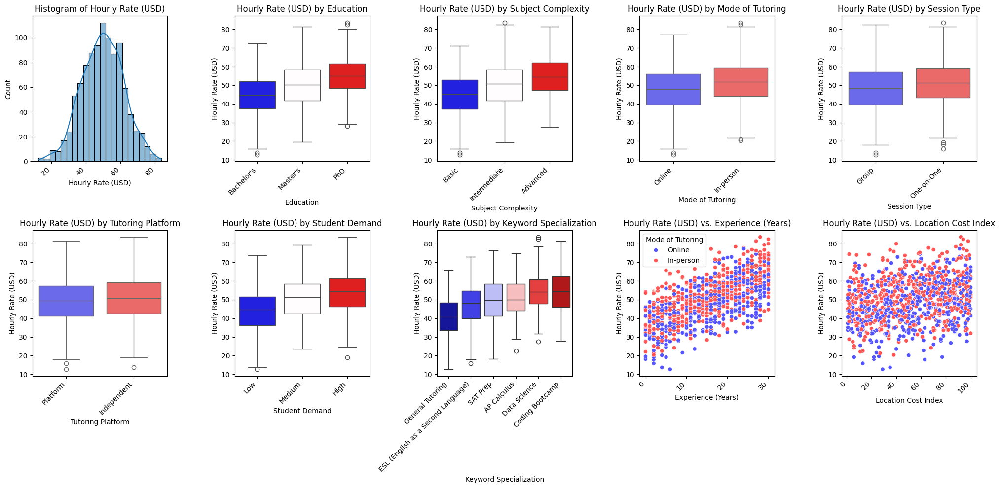
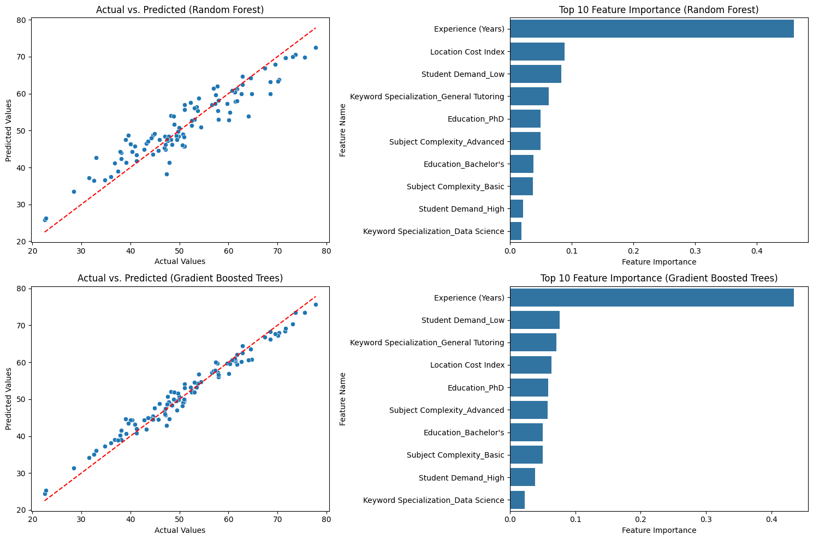
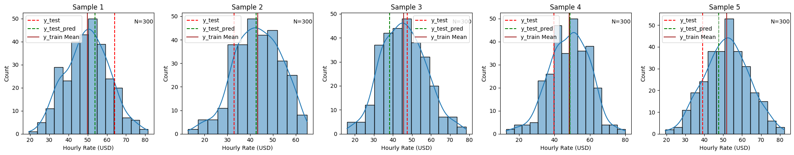

Feature Based Price & Cost Prediction
If pricing lives in a spreadsheet, margin leakage is structural. Gradient Boosted Trees achieves test R² of 0.967 and MAE of $1.72 across nine covariates — versus Random Forest's $3.30. That delta is quote accuracy and competitive win rate in a single number. When predictions cluster toward the mean on edge cases, that's a data coverage gap, not a model failure — a distinction that shapes where you invest next in data acquisition.
RAG-augmented pipelines dynamically retrieve competitor pricing and demand signals, keeping the model current without the overhead of manual feature engineering cycles.
Feature-Based Price & Cost Prediction is a data-driven approach that uses machine learning and statistical models to estimate the price or cost of a product or service based on its characteristics (features). These features can include material costs, production time, brand, demand, market trends, and historical pricing data.
LLMs with RAG Search for Market Data
To create data for feature-based price and cost prediction, gather structured and unstructured data from sources like sales records, supplier costs, competitor pricing, and market trends. Use web scraping, APIs, and surveys to enrich datasets. Clean, preprocess, and engineer features to enhance predictive accuracy.
LLMs can enhance price prediction by retrieving relevant market insights via Retrieval-Augmented Generation (RAG). They can search real-time data, extract key pricing trends, and analyze customer sentiment. Integrating LLMs with structured databases allows dynamic price forecasting by leveraging external and internal knowledge efficiently.
Role of Machine Learning
Machine learning identifies patterns in feature-based price and cost data, enabling accurate predictions. It automates pricing models, detects trends, and optimizes cost estimation. Techniques like regression, tree-based models, and neural networks refine predictions, improving decision-making and competitive pricing strategies.
Multivariate Wage Data
Here we are using simulated multivariate wage data for tutors created to show the use of machine learning. There are 9 covariates and the target variable is Hourly Wage Rate (USD).

Machine Learning Modeling
The target is a continuous variable. Tensorflow Random Forest & Gradient Boosted Trees were used to build the model. The data was divided into 70-20-10 train/test/validation set. The following are the results:
| Model | Dataset | MAE | R2 | Explained Variance | MSE | RMSE |
|---|---|---|---|---|---|---|
| Random Forest | Train | 1.246579 | 0.982348 | 0.982348 | 2.468450 | 1.571130 |
| Validation | 3.418445 | 0.868955 | 0.868957 | 19.131375 | 4.373943 | |
| Test | 3.297460 | 0.874221 | 0.874558 | 16.826888 | 4.102059 | |
| Gradient Boosted Trees | Train | 1.002240 | 0.988137 | 0.988137 | 1.658833 | 1.287957 |
| Validation | 1.862371 | 0.961267 | 0.961272 | 5.654648 | 2.377950 | |
| Test | 1.721145 | 0.966926 | 0.967453 | 4.424735 | 2.103506 |
The following visualizations show visual comparison between the 2 methods of ML used and comparing between results and covariates used in the model.

Explaining AI

A machine learning model learns from the training data, learns weights and such from the data. The final prediction is a reflection of the data that was used to train. The above shows the 5 worst predictions in the test data and how it compares to similar cohort in the training set. It shows something interesting — the predicted values are close to the mean value when compared with the actual wage value in the test data set.